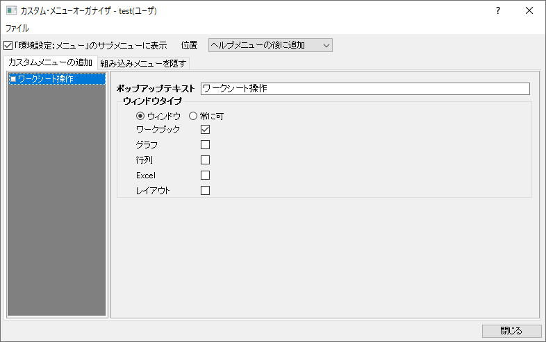
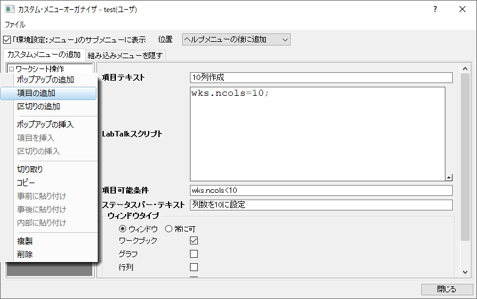
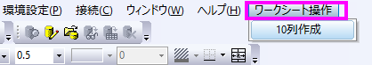

カスタムメニューの作成
Create-Custom-Menus
カスタムメニューオーガナイザを使うと、以下のことが可能です。
- 3つまでのポップアップメニューを作成でき、それぞれ複数レベルのメニューをサポートします。
- LabTalkスクリプトやXファンクションをメニューアイテムに割り当てできます。
- メニュー項目の利用可否を、指定したウィンドウの種類がアクティブなときのインスタンスに制限するできます。
- カスタマイズしたメニューを.omcファイルとして他のユーザと共有できます。
- 組み込みメニューを非表示にします。
次の例では、ワークシート操作という名前のメニューを作成する方法を示しています。
- Originメニューから環境設定：カスタムメニューオーガナイザを選択します。
- メニューからファイル:新規作成を選択して、新しいOMCファイルを作成します。
- カスタムメニューの追加パネルの左側を右クリックし、新規メインポップアップを選択します。右側で、ポップアップテキストのテキストボックスにワークシート操作と入力します。ウィンドウラジオボックスを選び、ワークブックにだけチェックします。これにより、ワークシートがアクティブな場合にのみワークシート操作メニューを使用できるようになります。

- カスタムメニューの追加パネルの左側のワークシート操作を右クリックし、ショートカットメニューから項目の追加を選びます。カスタムメニューの追加パネルの右側で、次のように入力します。

- ファイル:保存を選択して、変更を.omcファイルとして保存します。User Filesフォルダを参照します。ファイル名としてtest.omcと入力し、OKをクリックします。
- カスタムメニューオーガナイザを終了します。
- メインメニューから環境設定：メニュー：testを選択します。ワークシートをアクティブにします。ワークシート操作メニューが表示されます。

- ワークシートの列数が10列未満の場合、10列作成メニューが利用できます。それを選択します。ワークシート列数が10列になります。
 | *.omcファイルにデフォルトの名前を付けないようにしてください。これは予約されているため、問題が発生する可能性があります。
|
|
システムフォルダ、User Filesフォルダ、グループフォルダ内のすべての.omcファイルが、環境設定:メニューの下に表示されます。それらのいずれか1つを選択して、カスタマイズしたメニューをアクティブにします。環境設定:メニューに表示されない場合は、 環境設定:カスタムメニューオーガナイザー...を一度選択してみてください。
|
 | - ツールまたは環境設定メニューが非表示になっていて、メインメニューからカスタムメニューダイアログを開けない場合は、 スクリプトウィンドウまたはコマンドウィンドウにcustomMenuと入力して、カスタムメニューオーガナイザダイアログを開くことができます。
- WindowsエクスプローラからOriginワークスペースに.omcファイルをドラッグアンドドロップして開くことができます。または、システムフォルダ、ユーザファイルフォルダ、またはグループフォルダの下に.omcファイルを直接置くこともできます。環境設定:メニューに表示されない場合は、 環境設定:カスタムメニューオーガナイザー...を一度選択してみてください。
- LabTalkシステム変数@DSB=1を設定することで、スタートメニューを非表示にし、関連するF1検索機能を無効にすることができます。
|